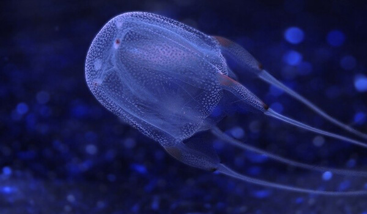

Морская оса
Эта медуза считается самой ядовитой: выпускаемый ее щупальцами яд может убить взрослого человека за несколько минут. Почти прозрачный купол этого животного достигает размеров баскетбольного мяча, щупальца достигают в длину трех метров. Морская оса отличается от сородичей тем, что обладает "глазами" — способными воспринимать свет и изображение, хотя их роль в ее поведении не доказана, так как у медуз нет центральной нервной системы.
